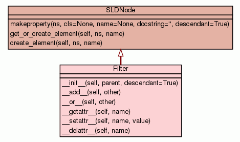

Class Filter
source code

A filter object that stores the property comparitors. A Filter is a
child of a Rule element.
Filter nodes are pythonic, and have some syntactic sugar that allows the
creation of simple logical combinations.
To create an AND logical filter, use the '+' operator:
>>> rule.Filter = filter1 + filter2
To create an OR logical filter, use the '|' operator:
>>> rule.Filter = filter1 | filter2
Complex combinations can be created by chaining these operations
together:
>>> rule.Filter = filter1 | (filter2 + filter3)
Properties:
-
PropertyIsEqualTo
A specification of property (=) equality.
Type: PropertyCriterion
-
PropertyIsNotEqualTo
A specification of property (!=) inequality.
Type: PropertyCriterion
-
PropertyIsLessThan
A specification of property less-than (<) comparison.
Type: PropertyCriterion
-
PropertyIsLessThanOrEqualTo
A specification of property less-than-or-equal-to (<=)
comparison.
Type: PropertyCriterion
-
PropertyIsGreaterThan
A specification of property greater-than (>) comparison,
Type: PropertyCriterion
-
PropertyIsGreaterThanOrEqualTo
A specification of property greater-than-or-equal-to (>=)
comparison.
Type: PropertyCriterion
|
|
|
|
Filter
|
__add__(self,
other)
Add two filters together to create one AND logical filter. |
source code
|
|
|
Filter
|
__or__(self,
other)
Or two filters together to create on OR logical filter. |
source code
|
|
|
PropertyCriterion
|
|
|
|
|
|
|
|
|
Inherited from SLDNode:
create_element,
get_or_create_element
Inherited from object:
__format__,
__getattribute__,
__hash__,
__new__,
__reduce__,
__reduce_ex__,
__repr__,
__sizeof__,
__str__,
__subclasshook__
|
|
Inherited from object:
__class__
|
__init__(self,
parent,
descendant=True)
(Constructor)
| source code
|
Create a new Filter node.
- Parameters:
parent (Rule) - The parent class object.descendant (boolean) - A flag indicating if this is a descendant node of the parent. - Overrides:
object.__init__
|
|
Add two filters together to create one AND logical filter.
- Parameters:
other (Filter) - A filter to AND with this one. - Returns: Filter
- A new filter with an ogc:And element as its child.
|
|
Or two filters together to create on OR logical filter.
- Parameters:
other (Filter) - A filter to OR with this one. - Returns: Filter
- A new filter with an ogc:Or element as its child.
|
__getattr__(self,
name)
(Qualification operator)
| source code
|
Get a named attribute from this Filter instance. This method allows
properties with the prefix of 'PropertyIs' to be set, and raises an
AttributeError for all other property names.
- Parameters:
name (string) - The name of the property. - Returns: PropertyCriterion
- The property comparitor.
|
|
Set a named attribute on this Filter instance. If the property name
begins with 'PropertyIs', the node value will be appended to the
filter.
- Parameters:
name (string) - The name of the property.value (PropertyCriterion) - The new property comparitor. - Overrides:
object.__setattr__
|
|
Delete the property from the Filter. This removes the child node of
this name from the Filter.
- Parameters:
name (string) - The name of the property. - Overrides:
object.__delattr__
|